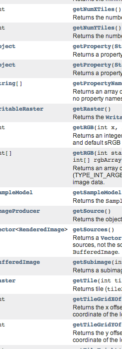

PureImage: raster image processing for Scala
The problem
Available image libraries are difficult to use
They feature byzantive and opaque APIs
Mutable data structures
(I'm preaching to the choir here)
Or require concrete representations of images
Image *ConstituteImage(
const size_t columns,
const size_t rows,
const char *map,
const StorageType storage,
const void *pixels,
ExceptionInfo *exception
)But what, exactly, is a raster image?
Images are simple things
Let's give them a simple representation
trait Image[A] {
def width: Int
def height: Int
def apply(x: Int, y: Int):A
}PureImage
- Simple
- (Mostly) purely functional
- Fun
parsing
package ps.tricerato.pureimage
sealed trait ReadError
case object UnsupportedImageType extends ReadError
case class ReadException(e: Exception) extends ReadError
sealed trait LoadedImage
case class RGBImage(image: Image[RGB]) extends LoadedImage
case class RGBAImage(image: Image[RGBA]) extends LoadedImage
case class GrayImage(image: Image[Gray]) extends LoadedImage
object Input {
def apply(data: Array[Byte]):Either[ReadError, LoadedImage] = ???
}Colors
- Overall API is generic; we can represent a pixel as everything
- For import/export, we support three types of pixels.
- Internal represenation is as Ints:
case class RGB(i: Int) extends AnyVal {
def red = (i & 0xff)
def green = ((i >> 8) & 0xff)
def blue = ((i >> 16) & 0xff)
}
case class RGBA(i: Int) extends AnyVal {
def red = (i & 0xff).toByte
def green = ((i >> 8) & 0xff).toByte
def blue = ((i >> 16) & 0xff).toByte
def alpha = ((i >> 24) & 0xff).toByte
}
case class Gray(i: Int) extends AnyVal {
def white = (i & 0xff).toByte
}
How can we work with pixels whose representation may be completely arbitrary in a generic way?
Typeclasses
trait Pixel[A] {
def sum(a: A, b: A):A
def fade(p: A, f: Float):A
def zero: A
}
def f[A : Pixel](image: Image[A]) = {
val ops = image.ops
...
}
Output
- Arbitrary number of pixel types
- Arbitrary number of image formats
- Many output formats don't support some pixel types (JPEG doesn't support an Alpha channel)
- The solution?
Typeclasses
trait OutputFormat
case class JPEG(quality: Int) extends OutputFormat
object PNG extends OutputFormat
object GIF extends OutputFormat
trait Output[I, O <: OutputFormat] {
def apply(i: Image[I], o: O):Array[Byte]
}Let's try something...
First, we need a picture.
Input(resource("/zardoz.jpeg")) match {
case Right(RGBImage(image)) => image
case _ => ???
}This will do.
def fib1[A : Pixel](image: Image[A]):Image[A] = {
import filter._
val square = squareCrop(image)
new Image[A] {
def width = (square.width * PHI).toInt; def height = square.height
def apply(x: Int, y: Int) = if (x >= square.width) {
image.ops.zero
} else {
image(x,y)
}
}
}def fib2[A : Pixel](image: Image[A]):Image[A] = {
import filter._
val square = squareCrop(image)
new Image[A] {
def width = (square.width * PHI).toInt; def height = square.height
def apply(x: Int, y: Int) = {
val flipped = Rotate(Rotate.Clockwise90, image)
if (x >= square.width) {
flipped(x - square.width, y)
} else {
image(x,y)
}
}
}
}def fib3[A : Pixel](image: Image[A]):Image[A] = {
import filter._
val square = squareCrop(image)
new Image[A] {
def width = (square.width * PHI).toInt; def height = square.height
def apply(x: Int, y: Int) = {
lazy val flipped = Rotate(Rotate.Clockwise90, fib3(image))
if (x >= square.width) {
flipped(x - square.width, y)
} else {
image(x,y)
}
}
}
}def fib4[A : Pixel](image: Image[A]):Image[A] = {
import filter._
val square = squareCrop(image)
new Image[A] {
def width = (square.width * PHI).toInt; def height = square.height
def apply(x: Int, y: Int) = {
lazy val flipped = Rotate(Rotate.Clockwise90, fib4(image))
lazy val scaled = scale(
flipped.height.toFloat / image.height,
flipped
)
if (x >= square.width) {
scaled(x - square.width, y)
} else {
image(x,y)
}
}
}
}def fib5[A : Pixel](image: Image[A]):Image[A] = {
import filter._
val square = squareCrop(image)
new Image[A] {
def width = (square.width * PHI).toInt; def height = square.height
def apply(x: Int, y: Int) = {
lazy val flipped = Rotate(Rotate.Clockwise90, fib4(image))
lazy val filtered = Lanczos(PHI.toFloat * 2)(flipped)
lazy val scaled = scale(flipped.height.toFloat / image.height, filtered)
if (x >= square.width) {
scaled(x - square.width, y)
} else {
image(x,y)
}
}
}
}
Included filters
- Lanczos
- Translate
- Scale
- Crop
- Alpha blending
- Whatever you want to write
Lanczos filtering

Problems
External image libraries
- Everything is terrible
- Java/AWT imaging: crazy and buggy
- Apache Imaging: slow
- C libraries: they are written in C
Boxing
In production, no single optimization proved as fruitful as avoiding boxing
- Image processing involves very many small calculations
- Allocation, incrementing heap pointers, and triggering (generational) GC aren't that expensive...
- But they're more expensive than bitwise operations of primitives on the stack
- Hence, boxing-related overhead can quickly dominate
- Generics work well
- Specialization works well
- Value classes work well
- They don't work well together [SI-5611]
clasee WrappedInt(val i: Int) extends AnyVal
def fooRaw(i: Int) = ??? // no boxing
def fooWrapped(w: WrappedInt) = ??? // no boxing
def fooGeneric[@specialized(Int) A](i: I) = ???
fooGeneric(42) // no boxing
fooGeneric(WrappedInt(42)) // boxing!
Thanks!
- Stephen Judkins
- @stephenjudkins
- https://github.com/stephenjudkins/pureimage
- http://tricerato.ps